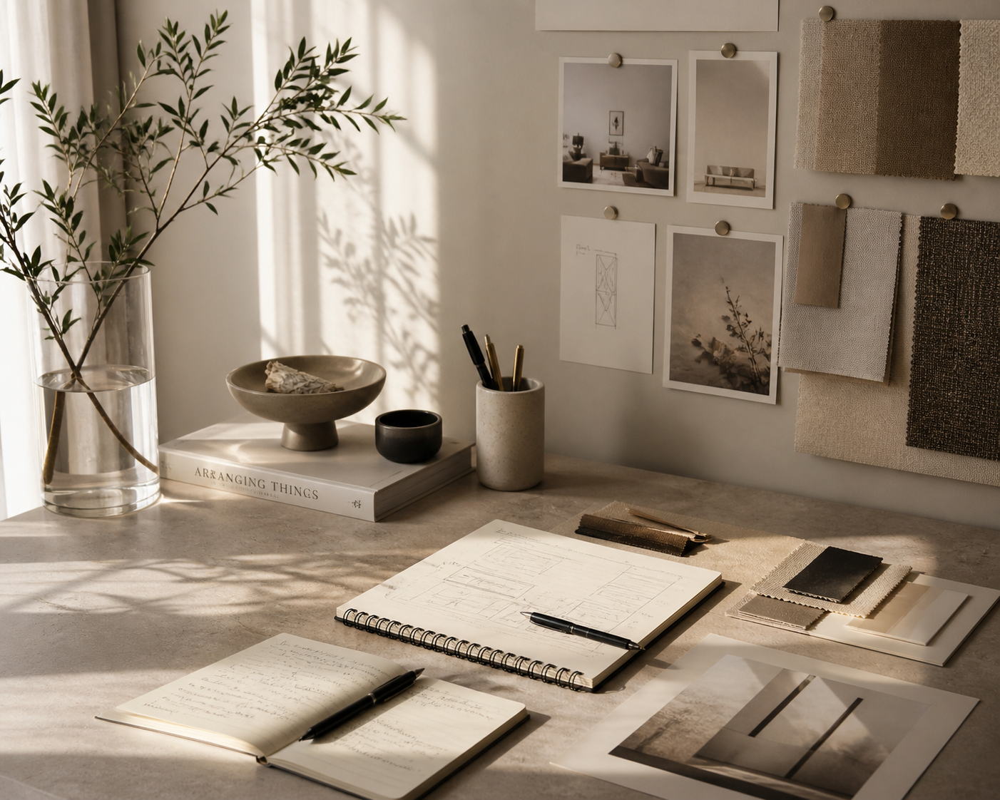

01 About Me
My path into UX started in physical space — designing interiors and cross-cultural showrooms where every decision had real, tangible consequences. That background taught me to think in systems, consider context deeply, and design for how people actually move through an experience.
Today I bring that same structural thinking to digital products. I care about clarity, emotional comfort, and practical systems that support real human needs — not just interfaces that look polished, but experiences that feel calm, useful, and grounded.
